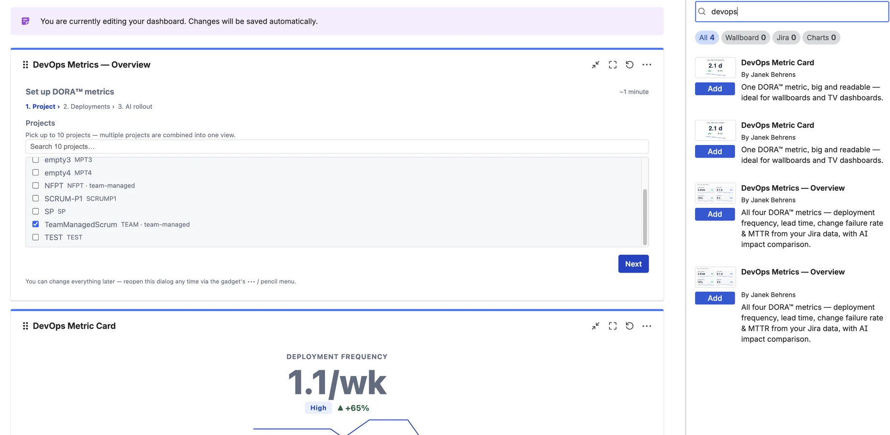
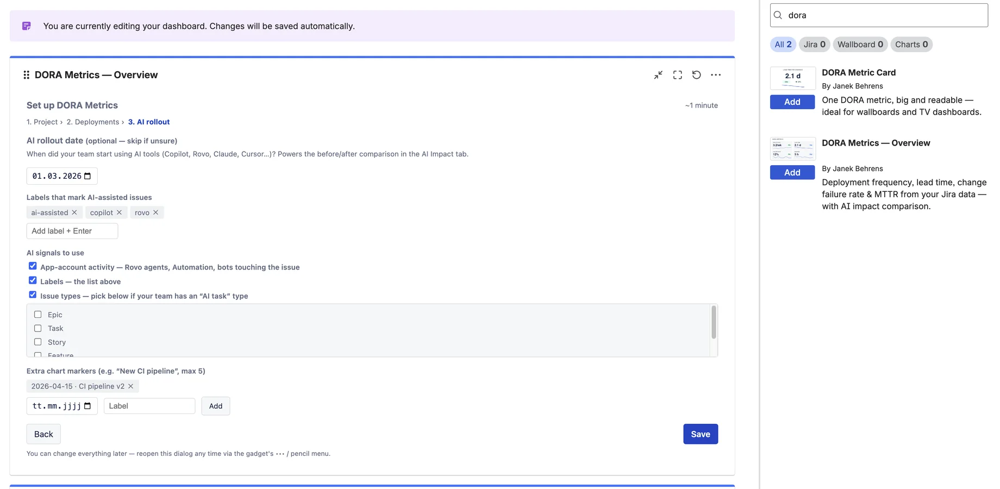

DevOps Metrics for Jira — Documentation
All four DORA™ metrics on any Jira dashboard — calculated from the Jira data you already have, no CI/CD setup.
Contents
1. Overview
DevOps Metrics for Jira puts the four key delivery metrics from the DORA research (DevOps Research & Assessment) on any Jira dashboard:
- Deployment frequency — how often you ship,
- Lead time for changes — how long work takes from start to done,
- Change failure rate — the share of releases that caused problems,
- Time to restore (MTTR) — how quickly you recover when something breaks.
Everything is calculated from Jira work items — releases, status transitions, bugs and incident tickets. No CI/CD integration, no second product. Every number carries a DORA benchmark band (Elite / High / Medium / Low), a plain-language sentence, and a “How we calculate it” popup.

2. Quick start
Step 1 — Add the gadget
Open a Jira dashboard → Add gadget → search for “DORA” → add DORA Metrics — Overview. The gadget immediately shows a built-in sample dataset so you can explore every tab before configuring anything.
Step 2 — Pick your project
Open the gadget's Edit (pencil) menu. Step 1 of the wizard lists the projects you can browse — pick one (Pro: up to 10, combined into one view).

Step 3 — Accept the recommendation
The wizard inspects your project. If it finds released Jira versions, it recommends Releases as your deployment definition — including how many it found. Click “Use recommended settings” and you're done; the first analysis runs in the background and the tiles fill with your real numbers.

3. Configuration
What counts as a deployment?
- Releases (default, recommended): every Jira version marked as released with a release date counts as one deployment.
- Issues reaching a status: every issue that first reaches one of the statuses you pick counts as one deployment — for teams that don't maintain releases.
Advanced PRO
- Incident types: which issue types count as incidents for Time to restore (default: bug/incident-like types).
- Sub-tasks: include or exclude them from lead time & throughput (default: excluded).
AI rollout (optional)
Step 3 of the wizard powers the AI Impact tab: rollout date, the labels that mark AI-assisted issues, which AI signals to use, and up to five custom chart markers.

Everything can be changed later — reopen the wizard any time via the gadget's ••• / pencil menu. Changing definitions triggers a clean recalculation.
4. How the metrics are calculated
Buckets are ISO weeks; display periods (30 days … 12 months) aggregate weekly data. Durations use medians (P50) — robust against outliers.
| Metric | Calculation (default definitions) |
|---|---|
| Deployment frequency | Released Jira versions per week (or first transitions into your configured statuses). Shown as “per week” or “per month”, whichever reads naturally. |
| Lead time for changes | Median time from the first transition into the In progress category to the last transition into Done, over issues completed in the period. Re-opened issues count from their final completion. |
| Change failure rate | Share of releases with at least one bug raised within 14 days that is linked via fix/affected version — or, where bugs carry no version, raised within 14 days after the release. Without releases: re-open rate (transitions out of Done ÷ into Done). |
| Time to restore (MTTR) | Median time from an incident-type issue being created to it being resolved, for incidents resolved in the period. |
Benchmark bands follow the published DORA research (the classic Elite/High/Medium/Low model). The thresholds are fixed on purpose — consistent yardsticks beat configurable ones.
5. Data quality & exclusions
The footnote under every view shows what the numbers are based on — e.g. “Based on 142 completed issues · 12 releases · 8 excluded”. Click Details for the full breakdown:
- Issues that never passed through In progress (lead time not measurable),
- issues with inconsistent dates, and sub-tasks (if excluded),
- released versions without a release date,
- how each change-failure bug was attributed (version link vs time proximity).
6. AI Impact PRO
Set your AI rollout date (Copilot, Rovo, Claude, Cursor…) and the AI Impact tab compares equal periods before and after on all four metrics, with a deterministic plain-language verdict (rule-based — no LLM). A second view compares AI-involved issues vs other issues completed in the same period.

AI involvement is detected via three configurable signals (OR-combined), each individually switchable:
- App-account activity — a Rovo agent, Automation for Jira or another app touched the issue's workflow,
- labels — defaults:
ai-assisted,copilot,rovo, - issue types — if your team maintains an “AI task” type.
7. The Metric Card gadget PRO
The second gadget, DORA Metric Card, shows a single metric big and readable from across the room — value, benchmark band, trend arrow and sparkline. Built for TV dashboards: put four cards side by side and the whole floor sees where delivery stands. It inherits the definitions you configured in the Overview gadget for the same project.

8. Exports PRO
- PNG — a presentation-ready report image of the overview (or the current trend chart) for the QBR deck. One click, no dialog.
- CSV — the weekly aggregates behind the charts, for your own analysis.
- Copy as text — a Markdown summary table including the plain-language sentences, ready to paste into Confluence, Slack or e-mail.
9. Free vs Pro
| Free | Pro | |
|---|---|---|
| Overview gadget (tiles, benchmark bands, trends) | ✓ (1 project) | ✓ |
| Plain-language explanations & method popups | ✓ | ✓ |
| AI Impact tab (before/after + AI segment) | — | ✓ |
| Custom definitions (deployments, incidents, sub-tasks) | — | ✓ |
| Multiple projects in one gadget (up to 10) | — | ✓ |
| Metric Card wallboard gadget | — | ✓ |
| Event markers on trend charts | — | ✓ |
| PNG / CSV / copy-as-text exports | — | ✓ |
Free covers sites with up to 10 users; larger sites get a free trial. See the Marketplace listing for per-user pricing.
10. FAQ & Troubleshooting
The gadget shows “Sample data”
That's the built-in demo shown before configuration. Open Edit (pencil), pick your project, done.
Deployment frequency is zero
In Releases mode the app counts versions marked released (with a release date). If your team doesn't maintain releases, switch the deployment definition to “Issues reaching a status” in the wizard.
“Analyzing your project history…” takes a while
The first run reads up to 12 months of completed issues (capped at the most recent 10,000). This happens once; afterwards the gadget loads instantly and refreshes incrementally.
Lead time shows “—” or excludes many issues
Lead time needs a transition into an In progress status. Issues created straight into Done can't be measured — they still count for throughput, and the Details popup lists them.
Change failure rate seems high/low
Check the Details popup: it shows how bugs were attributed to releases (fix/affected version vs. 14-day time proximity). Setting affected versions on bugs makes CFR most accurate. With fewer than 5 releases in the period the tile adds a “treat as directional” note.
“You don't have access to this project's data”
The app enforces Jira project permissions per viewer: you only see metrics for projects you can browse. Ask your Jira admin for access, or pick another project.
The AI Impact tab asks for a date even though I saved one
Make sure the date was set in step 3 of the wizard and saved. The date picker on the tab itself is a quick preview only.
11. Support
Email: support@janekbehrens.de
Support page: dora-metrics-support
See also: Privacy Policy ·
Security Policy ·
Terms of Service